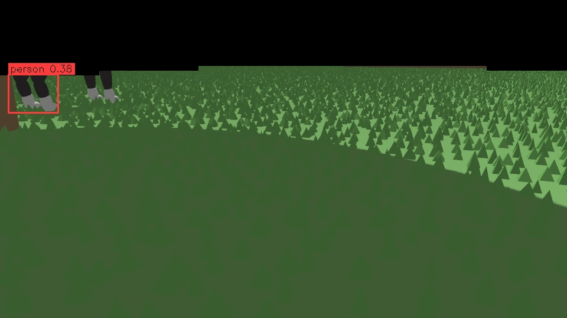
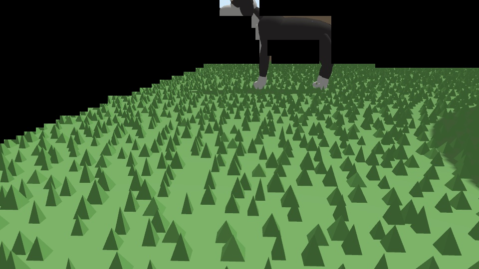
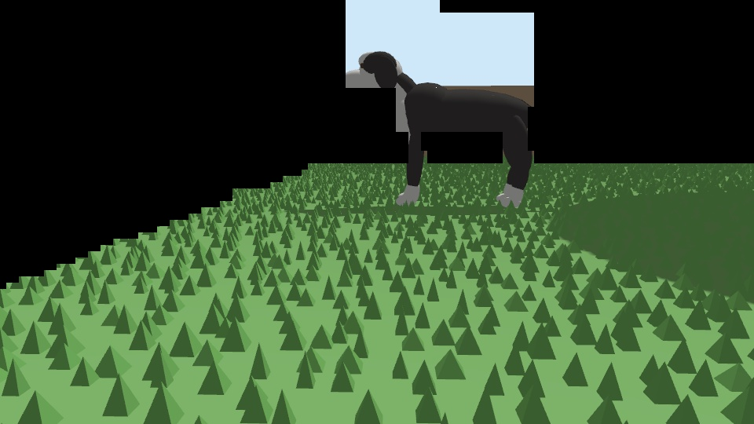

What the camera saw
The last post ended with the robot's camera never calling either dog a dog, and a guess why: they came in from the side, and the camera looks forward. So we gave the camera a fair test, with a dog that crosses in front. The guess turned out to be only part of the answer. On the way we found three more problems, all in our own code. The fourth answer is about the simulator itself.
A dog that crosses in front
A new scenario: the dog trots across 3.5 m ahead of the robot, stops in its path to sniff the grass for 8 seconds, then trots on. Here's Moose:
The first two tries went wrong in an instructive way. The test lawn is a strip along the north fence, so on many lanes "3.5 m ahead" is mostly fence. Moose appeared there, trotted one metre and stood still. A dog that has barely moved, standing against a fence, looks just like part of the fence to the lidar. The robot treated him as an ordinary obstacle until he trotted off. That's still safe, since nothing moving had been missed, but it wasn't the test we meant. Now the dog waits until the robot is facing open lawn, and comes from the side with room to run.
With that fixed, every safety check passes: Moose is flagged as moving at 4.2 m, the blade goes off, and the robot stops 2.1 m short of him and waits 34 s after he's gone.
Three things the camera never saw
Which frames did the robot's own camera actually get? We don't record camera images: that's a privacy rule we decided early on. So we added a debug switch that saves the masked frames, the ones the detector sees, during a sim run.
1. Legs only. The privacy mask blacks out everything that isn't our lawn before the detector runs: the neighbour's garden, the street, the house. Here's what was left of Moose:

The detector called the legs "person". The mask was designed to use the 3D lidar as evidence of what stands on our lawn: a lidar return on the dog, inside the lawn, keeps the pixels around it. The perception node never gave the mask the lidar. With no lidar, it fell back to its strictest rule: keep a pixel only if, followed down, it hits our lawn's ground. Anything standing up was cut off where its outline rose above the lawn's far edge in the picture. Every unit test of the mask passed, because they called it with a lidar. The node was the one place that didn't.
2. No back, no head. Fixing that showed a second hole in the mask. The rule that keeps a person's head extends up from the lidar's top ring. A dog is shorter than that ring: it passes over him and hits the fence. So the strip between his highest lidar return and the fence return went black, which is exactly where his back and head were. A new rule keeps up to 40 cm above a low object's highest return, at its own distance. The privacy cost is bounded: at most a 40 cm strip of whatever is directly behind the dog. A test checks that it never applies to the lawn's own far edge.

3. The top of the picture. Now the mask keeps him, and the camera cuts his head off. Every robot's camera points 14.3° down. That's 0.25 radians, a round number nobody chose. With the camera 32 cm up, the top of the picture is only 5° above level: at 3 m, that's 58 cm high, and Moose's head is higher. Tilted to 8°, he fits:

That run gave the first "dog" from the robot's own camera, at 2.6 m. It was one frame out of 25.
Four: the dogs themselves
So we replayed the saved frames through the detector offline. We tried a mid-grey fill instead of black, then a lawn-coloured one, then the next model size up (YOLOX-tiny). None of it helped. With Moose side-on, sniffing, the detector's best guesses are "cow 0.14" and "chair 0.13".
This is where the simulator stops being useful for this question. Our dogs are about 30 smooth ellipsoids each. The detector learned "dog" from hundreds of thousands of photos of fur, faces and real light. A blob dog fooling it says nothing about how it does with Clover or Moose in the real yard. Tuning against blob dogs would only make the numbers look better.
The bugs were real, though, and they would have shipped. The dogs were drawn white, the mask was missing its lidar, a dog's head was masked off, and the camera tilt was never chosen. None of them showed up in a unit test, and all of them showed up the first time we looked at what the robot actually saw.
| Run | Who | Safety | Frames in view | Right label |
|---|---|---|---|---|
| cam-8 (crossing fixed, mask ground-only) | Moose | PASS | 34 | 0 |
| cam-9 (mask with lidar, camera 14.3°) | Moose | PASS | 35 | 0 |
| dbg-2 (camera 8°) | Moose | n/a, short run | 25 | 1 (0.44 at 2.6 m) |
| cam-10 (mask with lidar, camera 14.3°) | Clover | PASS | 35 | 0 |
Speed, the number we promised to keep honest: at Raspberry Pi 5 CPU pace the detector manages 3.6 frames a second, about 125 ms from the camera to a detection. (The laptop does a frame in 14 ms. That number is never the headline.)
Waiting on Chris
Two questions for him on mission control:
- The camera tilt. 8° sees a dog whole from 2.4 m; the nearest ground in view moves from 0.48 m to 0.62 m (the lidar covers that strip anyway).
- How to test the detector from here: a small set of real photos from the yard (his dogs, people, toys, a hose, taken with permission and kept private), or more realistic sim dogs first, or both.
Not covered yet
- Two dogs at once.
- Pi 5 + Hailo AI HAT speed: today's runs were held to Pi 5 CPU pace.
- The grass report's fix (a stop for a dog that's really there is no longer a "false stop") went in today too; the earlier dog runs now pass it.